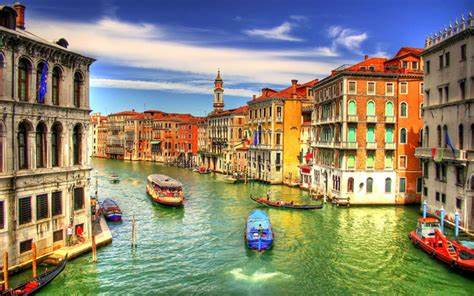
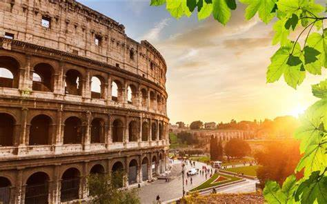
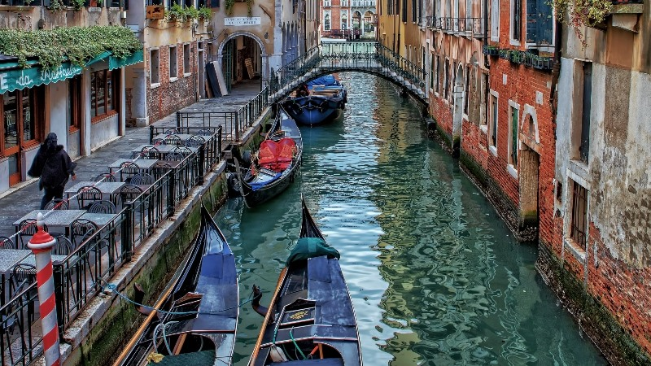

Η γειτονική Ιταλία αποτελεί έναν απ τους πιο hot προορισμούς της Ευρώπης αφου διαθέτει πανέμορφα φυσικά τοπία, μια πλούσια ιστορία αλλά και εκπληκτική κουζίνα. Πρωτεύουσα και μεγαλύτερη πόλη της Ιταλίας, είναι η Ρώμη κοιτίδα του πολιτισμού της. Βόρεια συνορεύει με την Ελβετία και την Αυστρία, δυτικά με τη Γαλλία και ανατολικά με τη Σλοβενία, ενώ εξκλάβιο της Ιταλίας αποτελεί και η πόλη Καμπιόνε ντ' Ιτάλια, που βρίσκεται στο έδαφος της Ελβετίας. Οι ανεξάρτητες χώρες του Αγίου Μαρίνου και του Βατικανού βρίσκονται εξ ολοκλήρου μέσα σε ιταλικό έδαφος.
Για τους ταξιδιώτες που κάνουν το δρόμο τους μέσα από την Ιταλία, το Κολοσσαίο πρέπει να το δούμε. Αυτό το τεράστιο αμφιθέατρο είναι το μεγαλύτερο του είδους του που χτίστηκε ποτέ από τη Ρωμαϊκή Αυτοκρατορία και παρέμεινε ένα πρότυπο για αθλητικές εγκαταστάσεις μέχρι τις σύγχρονες εποχές. Χτισμένο ως χώρος για τη διοργάνωση δημόσιων γυαλιών και παραστάσεων - ακόμη και μαχητικές μάχες στη θάλασσα, είχε ένα ξύλινο πάτωμα που ήταν 83 με 48 μέτρα. Κάτω από αυτά υπήρχαν δύο ιστορίες από σήραγγες, δωμάτια, κελιά και χωρίσματα για τους μονομάχους, τους εργάτες, τα άγρια ζώα και την αποθήκευση. Σήμερα, η δομή βρίσκεται σε πλήρη αντίθεση με τη σύγχρονη ανάπτυξη που την περιβάλλει και είναι μια εξέχουσα υπενθύμιση των αρχαίων χρόνων και της εκτεταμένης ιστορίας της Ρώμης.
Μια γόνδολα βόλτα στα κανάλια της Βενετίας είναι μια παράδοση που οι ταξιδιώτες απολαμβάνουν εδώ και αιώνες. Η Βενετία είναι μια πόλη νησιών, και τα κανάλια είναι από καιρό οι κύριοι δρόμοι της πόλης, που συνδέονται με ένα λαβύρινθο από στενά περάσματα. Η επένδυση των καναλιών είναι παλιά κτίρια που παρέμειναν σχετικά αμετάβλητα για εκατοντάδες χρόνια, προσθέτοντας τη ρομαντική γοητεία. Το Μεγάλο Κανάλι είναι η πιο διάσημη από αυτές τις πλωτές οδούς και μία από τις πιο φωτογραφικές τοποθεσίες στη Βενετία. Ο καλύτερος τρόπος να δείτε πολλά από τα μεγάλα παλάτια, των οποίων τα μέτωπα αντιμετωπίζουν το νερό, είναι από μια βόλτα με βαπορέτο κατά μήκος του Μεγάλου Κανάλι.
| ΚΟΥΖΙΝΕΣ | Ιταλική, Μπαρ, Πίτσα, Μεσογειακή, Υγιεινή |
|---|---|
| ΓΕΥΜΑΤΑ | Μεσημεριανό, Δείπνο, Μπραντς, Ποτά |
| ΔΥΝΑΤΟΤΗΤΕΣ | Φαγητό σε πακέτο, Κρατήσεις, Υπαίθρια τραπέζια, Καθίσματα, Σερβίρει αλκοόλ, Πλήρες μπαρ, Δωρεάν WiFi, Δέχεται πιστωτικές κάρτες, Με σερβιτόρους, Διανομή κατ’ οίκον, Κρασί και μπύρα, Φιλικό προς τους σκύλους |

| ΚΟΥΖΙΝΕΣ | Ιταλική, Φαγητό του δρόμου, Φαστ φουντ, Υγιεινή |
|---|---|
| ΕΙΔΙΚΕΣ ΔΙΑΤΡΟΦΕΣ | Κατάλληλο για χορτοφάγους, Επιλογές βίγκαν | ΓΕΥΜΑΤΑ | Μεσημεριανό, Δείπνο, Μπραντς, Ποτά |
| ΔΥΝΑΤΟΤΗΤΕΣ | Διανομή κατ’ οίκον, Φαγητό σε πακέτο, Κρατήσεις, Μπουφές, Καθίσματα, Πάρκινγκ στο δρόμο, Πρόσβαση σε αναπηρική καρέκλα, Σερβίρει αλκοόλ, Δέχεται Mastercard, Δέχεται Visa, Ψηφιακές πληρωμές, Δέχεται πιστωτικές κάρτες |
Το κατάλυμα βρίσκεται στο κέντρο της πόλης, 4 λεπτά με τα πόδια από: Σκάλα του Μιλάνο και 6 λεπτά με τα πόδια από: Γκαλέρια Βιτόριο Εμανουέλε ΙΙ. Αυτό το ξενοδοχείο 5 αστέρων απέχει 0,6 χλμ. από: Καθεδρικός του Μιλάνου και 0,6 χλμ. από: Πιάτσα ντελ Ντουόμο.Κοντά σε σημεία ενδιαφέροντος όπως: Μουσείο Φυσικών Επιστημών .Στις σημαντικές παροχές περιλαμβάνονται δωρεάν γρήγορο check-in, τηλέφωνα,ασύρματη πρόσβαση στο ίντερνετ,δορυφορικά κανάλια, καθώς επίσης χρηματοκιβώτια και γραφεία. Το πιο βολικό αεροδρόμιο για το Mandarin Oriental, Milan είναι το Διεθνές Αεροδρόμιο Μαλπένσα (MXP).

Το Hotel Bodoni απέχει 500μ. από τον καθεδρικό ναό της Φλωρεντίας. Παρέχει δωρεάν χάρτες της πόλης και δωρεάν Wi-Fi στους κοινόχρηστους χώρους. Στη βεράντα που προσφέρει θέα στην πόλη σερβίρεται πλούσιος μπουφές πρωινού με αυγά, αλλαντικά και τυριά. Τα δωμάτια και τα διαμερίσματα είναι απλά επιπλωμένα και το καθένα διαθέτει κλιματισμό, δορυφορική τηλεόραση και ιδιωτικό μπάνιο. Τα διαμερίσματα περιλαμβάνουν επίσης πλήρως εξοπλισμένη κουζίνα. Το πολύγλωσσο προσωπικό του Bodoni είναι διαθέσιμο όλο το 24ωρο. Μπορεί να κάνει κρατήσεις εισιτηρίων σε αεροπλάνα, τρένα, μουσεία και εκδηλώσεις.